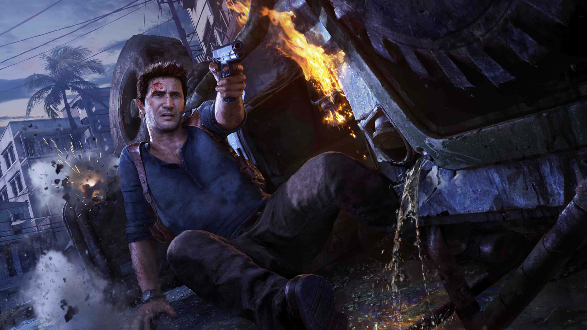

UNCHARTED: EL FINAL DEL LADRÓN
Explora las antiguas fronteras
¿QUÉ ES UNCHARTED?

Uncharted es una saga de videojuegos de acción y aventura creada por Naughty Dog para PlayStation, reconocida por su estilo cinematográfico y alta calidad gráfica. Su jugabilidad combina exploración, disparos en tercera persona, escalada, puzzles y secuencias llenas de acción. Entre sus principales características destacan los escenarios exóticos, narrativa intensa, personajes carismáticos y escenas que parecen de película.